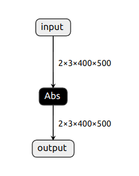
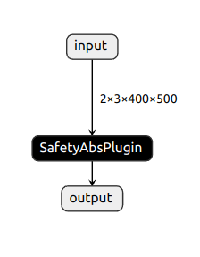
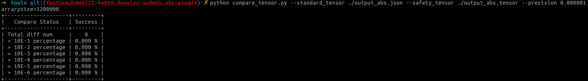

Safety abs plugin benchmark test
CNWVIII-44810 - Jira issue doesn't exist or you don't have permission to view it.
ONNX model standard vs safety:
 vs 
tensor accuracy

calculate time
./trtexec --loadInputs="input":input.bin --loadEngine=./abs.engine --dumpProfile [01/13/1970-23:50:20] [01/01/1970-06:47:42] [I] [01/01/1970-06:47:42] [I] === Profile (11574 iterations ) ===[01/01/1970-06:47:42] [I] Layer Time (ms) Avg. Time (ms) Median Time (ms) Time %[01/01/1970-06:47:42] [I] PWN(Abs_0) 633.18 0.0547 0.0546 100.0[01/01/1970-06:47:43] [I] Total 633.18 0.0547 0.0546 100.0[01/01/1970-06:47:43] [I] &&&& PASSED TensorRT.trtexec [TensorRT v8610] # ../../trtexec --loadInputs=input:input.bin --loadEngine=./abs.engine --dumpProfile# ../bin/safe_plugin_infer --loadEngine=./safety_abs.engine --bmp=input.bin &&&& RUNNING TensorRT.sample_safe_plugin_infer [TensorRT v8610] # ../bin/safe_plugin_infer --loadEngine=./safety_abs.engine --bmp=input.bininput tensor size = {2x3x400x500x}absPlugin Inference time = 0.1322&&&& PASSED TensorRT.sample_safe_plugin_infer [TensorRT v8610] # ../bin/safe_plugin_infer --loadEngine=./safety_abs.engine --bmp=input.bin|
Item |
runtime(ms) |
comment |
|
abs |
0.0547 |
|
|
safety_abs |
0.1322 |
|
engine size
|
Item |
size(byte) |
comment |
|
abs |
17532 |
|
|
safety_abs |
1666 |
|